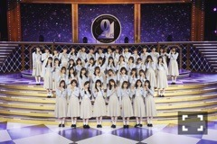
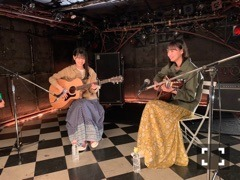

2021/0226Friもう夏がくる。
暖かくなってきましたね。
暑さが本当に苦手なので、
今から先が怖いです、悲しいです...
大園桃子です。
ブログ、お久しぶりです。
書かなければと思えば思うほど
何を書こうとわからなくてですね、
こんなに期間が空いてしまいました。
ごめんなさい。
9th バースデーライブ、前夜祭
見てくださった方
ありがとうございました。
すごいですよね、9年間って。
3期生も、もう4年目で
乃木坂のお誕生日に5回もお祝いさせて
頂いているなんて、
ありがとうございます。
ふとした時、客観的に見るのです。
よく考えてみると、やっぱり自分が
乃木坂でいることが不思議なのですよね
1年ちょっと前まで毎日泣いていて、
どうしようもなく辛かったです。
でも何が嫌なのか本当に分からない
そんな時期がながくありました。
でも、優しい沢山の先輩方に
包んでもらい守ってもらって
思いとどまる。その度に、
乃木坂も悪くないなって
何度も思う事ができていたようです。
だからこそ、
ここまで乃木坂のメンバーとして
頑張る事が出来たのだなぁと思います。
そして私を私のままで良いと
受け入れて、見守ってくださる、皆様
いつもありがとうございます。

26thシングルでは、友情ピアス。
さくらちゃんとのユニットが～、！

あまり後輩の子とお話を
上手にできない事が悩みでしたので、
仲良くなりたくて沢山話しかける挑戦
をしていました。笑
私的には、ユニットを組む前より
お話できるようになった気がしています！
どうかな、さくらちゃん...(*´-`)
話しかけすぎて困らせていたらごめんね。
そしてこの曲は2人とも初挑戦、
ギターを引きながらの映像撮影でした。
沢山練習して頑張ったので多めに優しく
見てくださると嬉しいです。
皆様、なかなか眠れない時など
いかがでしょうか？、
睡魔に襲われること間違いなしです♪

またね。
2021/02/26 13:18
コメント(978)
こんばんは。
今日もお疲れ様でした。松村沙友理さんとはいい思い出が作れましたか？僕はバイトがあったのでリピート配信から拝見させていただいたのですが、もうずっと涙涙でした。沙友理さんはもちろんのこと、たまに映るももちゃんもとっても綺麗でしたよ。笑顔が可愛いんだからもう。最後の松村さんとの会話では笑って見送っていたけど、後ろに行ってからは涙が溢れてましたね。ももちゃんと沙友理さんがどんなに深い思い出を作っていたのかは僕には分からないけど、ほんとに沙友理さんが素晴らしい人だったんだなと感じました。僕も大事な人とのサヨナラに強くなれるかな、笑顔で見送れるのかな。凄い泣いちゃいそうだな。ももちゃんのそういう姿大好きです。いつか卒業するとなってもずっと応援し続けます。大好きです。
また来月からは全ツが始まりますね。ももちゃんはスケジュール的にどうなるかまだまだ分かりませんが、ももちゃんはももちゃんのお仕事をたっくさん楽しんでくださいね。僕らも情報解禁を楽しみにしてます！明日も朝早いからそろそろ寝なきゃ。まだまだ余韻に浸っていたいですが、明日も頑張りましょう。
ももちゃんにとって明日も素晴らしい一日になりますように。健康第一で頑張ってください。
ではでは、おやすみなさい。
またね〜。
今日もお疲れ様でした。松村沙友理さんとはいい思い出が作れましたか？僕はバイトがあったのでリピート配信から拝見させていただいたのですが、もうずっと涙涙でした。沙友理さんはもちろんのこと、たまに映るももちゃんもとっても綺麗でしたよ。笑顔が可愛いんだからもう。最後の松村さんとの会話では笑って見送っていたけど、後ろに行ってからは涙が溢れてましたね。ももちゃんと沙友理さんがどんなに深い思い出を作っていたのかは僕には分からないけど、ほんとに沙友理さんが素晴らしい人だったんだなと感じました。僕も大事な人とのサヨナラに強くなれるかな、笑顔で見送れるのかな。凄い泣いちゃいそうだな。ももちゃんのそういう姿大好きです。いつか卒業するとなってもずっと応援し続けます。大好きです。
また来月からは全ツが始まりますね。ももちゃんはスケジュール的にどうなるかまだまだ分かりませんが、ももちゃんはももちゃんのお仕事をたっくさん楽しんでくださいね。僕らも情報解禁を楽しみにしてます！明日も朝早いからそろそろ寝なきゃ。まだまだ余韻に浸っていたいですが、明日も頑張りましょう。
ももちゃんにとって明日も素晴らしい一日になりますように。健康第一で頑張ってください。
ではでは、おやすみなさい。
またね〜。
こんばんは。
今日も一日お疲れ様です。今日はインスタのストーリーで沙友理さんについてコメントしてましたね。とても綺麗で儚くて本当のお姫様みたいと書いてましたが、ほんとに綺麗でしたね。卒業する方たちが毎回するドレス姿、みーんな美しいですね…。それを見るとなんか寂しい気持ちもあるんですけど、これから旅立って活躍する姿が楽しみでなんか複雑な気持ちです…。ももちゃんも数年後この先輩方の後を継いでいくのかな…。ちょっと寂しくなってきたけど、その時までずっと応援し続けますね。これからのももちゃんの活躍もずっと楽しみにしてます。大好きです。
明日もお仕事あるのかな？明後日はミーグリにらじらーがありますね。週末もいい一日になりますように。ずっと応援してます。
では、そろそろ寝ようかな。おやすみなさい。
またね。
今日も一日お疲れ様です。今日はインスタのストーリーで沙友理さんについてコメントしてましたね。とても綺麗で儚くて本当のお姫様みたいと書いてましたが、ほんとに綺麗でしたね。卒業する方たちが毎回するドレス姿、みーんな美しいですね…。それを見るとなんか寂しい気持ちもあるんですけど、これから旅立って活躍する姿が楽しみでなんか複雑な気持ちです…。ももちゃんも数年後この先輩方の後を継いでいくのかな…。ちょっと寂しくなってきたけど、その時までずっと応援し続けますね。これからのももちゃんの活躍もずっと楽しみにしてます。大好きです。
明日もお仕事あるのかな？明後日はミーグリにらじらーがありますね。週末もいい一日になりますように。ずっと応援してます。
では、そろそろ寝ようかな。おやすみなさい。
またね。
松村さんの卒業ライブ配信みました！
序盤のピンク色のかわいらしい衣装が印象的で、すごく似合っていたと思います。
後半はメンバーの皆さんの笑顔と涙で感動的なライブでした。
このライブで松村さんと良い思い出ができてれば幸いです。
立夏が過ぎ、本格的な夏の陽気が到来する時期なので体調にはお気を付けください。
序盤のピンク色のかわいらしい衣装が印象的で、すごく似合っていたと思います。
後半はメンバーの皆さんの笑顔と涙で感動的なライブでした。
このライブで松村さんと良い思い出ができてれば幸いです。
立夏が過ぎ、本格的な夏の陽気が到来する時期なので体調にはお気を付けください。
こんばんは。今日もお疲れ様です。
今日はももちゃんにとって楽しい一日になりましたか？ももちゃんが幸せなら僕も嬉しい気持ちでいっぱいです。
僕は今日はテストがありました。前々からしっかりと準備をしていたので気楽に解けたので良かったです。課題も着々と進んでおり明日には今出されている分は終わりそうな気がします。褒めて褒めて！って言いたいけどミーグリは来週だぁ。来週までずっと頑張ろうかな。体調を崩さない程度に無茶して行動しますね。今ならなんでも出来そう。
明日もなにかお仕事があるのかな？体調だけはお気を付けて、ももちゃんが楽しく過ごせることを願っております。大好きだよ。
では、そろそろ課題を再開しようかな。ももちゃん、おやすみなさい。
またね。
今日はももちゃんにとって楽しい一日になりましたか？ももちゃんが幸せなら僕も嬉しい気持ちでいっぱいです。
僕は今日はテストがありました。前々からしっかりと準備をしていたので気楽に解けたので良かったです。課題も着々と進んでおり明日には今出されている分は終わりそうな気がします。褒めて褒めて！って言いたいけどミーグリは来週だぁ。来週までずっと頑張ろうかな。体調を崩さない程度に無茶して行動しますね。今ならなんでも出来そう。
明日もなにかお仕事があるのかな？体調だけはお気を付けて、ももちゃんが楽しく過ごせることを願っております。大好きだよ。
では、そろそろ課題を再開しようかな。ももちゃん、おやすみなさい。
またね。
今日、エムオンで乃木坂の｢シンクロニシティ」のMV見ました
おはようございます
昨日は1週間の疲れが溜まっていたのか泥のように眠てました！気づいたら夜になっててびっくりです。課題は少しだけは進めたのであとは今日実験レポートを終わらせれば全部終わりです。頑張りますね。
今日は個別ミーグリですね。僕は今日はいけませんが、ももちゃん推しの方々とたくさん楽しくお話出来るといいですね。2人がお互いに楽しめれば幸いです。もちろん夜はらじらーも聴きますし、乃木坂工事中も拝見させていただきます。楽しみだなぁ。体調にだけはお気を付けて、無理せずにね。楽しみましょう！
今日も一日素晴らしい一日になりますように！
では、頑張ってきます。
またね。
昨日は1週間の疲れが溜まっていたのか泥のように眠てました！気づいたら夜になっててびっくりです。課題は少しだけは進めたのであとは今日実験レポートを終わらせれば全部終わりです。頑張りますね。
今日は個別ミーグリですね。僕は今日はいけませんが、ももちゃん推しの方々とたくさん楽しくお話出来るといいですね。2人がお互いに楽しめれば幸いです。もちろん夜はらじらーも聴きますし、乃木坂工事中も拝見させていただきます。楽しみだなぁ。体調にだけはお気を付けて、無理せずにね。楽しみましょう！
今日も一日素晴らしい一日になりますように！
では、頑張ってきます。
またね。
こんばんは
今日もお仕事お疲れさまです
僕は今、高校2年生でバスケをやってます
実は悩みがあって...
身長が低いんです
173cmしかありません
もちろん、僕より低い男子もたくさんいるんですが、周りの友達はみんな180cm近くあります
バスケをする上でも、やっぱり身長が高い方が何かと有利です
毎日、牛乳とか飲んで頑張ってるんですが...もう伸びませんかね？
桃子ちゃんは身長が低い男子について、どう思いますか？？
今日もお仕事お疲れさまです
僕は今、高校2年生でバスケをやってます
実は悩みがあって...
身長が低いんです
173cmしかありません
もちろん、僕より低い男子もたくさんいるんですが、周りの友達はみんな180cm近くあります
バスケをする上でも、やっぱり身長が高い方が何かと有利です
毎日、牛乳とか飲んで頑張ってるんですが...もう伸びませんかね？
桃子ちゃんは身長が低い男子について、どう思いますか？？
こんばんは。
今日は個別ミーグリにらじらーお疲れ様でした。僕は今日参加する券を持っていなかったのですが、色んな人が幸せそうにしていたのでももちゃん可愛かったんだろうなぁとこっちまで幸せになりました。僕は来週1部と3部に参加させていただくのでそこでももちゃんと楽しめたらいいなと思ってます！何話そうかなぁ。ミーグリのために今週も1週間授業に課題に頑張れそうです。らじらーも今日もほんっとに可愛かった。癒されますね、、、。途中心地よすぎて寝かけちゃいましたもん。乃木坂工事中でも笑顔のももちゃんが見れて良かったです。毎週こうやって少しでもテレビで見ることが出来るのは本当にありがたいことなんだなと実感します。
明日も、素晴らしい一日になりますように。応援しております。ずっと大好きです。
では、そろそろ寝ましょうかね。夢でももちゃん出て来るかな、楽しみ。おやすみなさい。
またね。
今日は個別ミーグリにらじらーお疲れ様でした。僕は今日参加する券を持っていなかったのですが、色んな人が幸せそうにしていたのでももちゃん可愛かったんだろうなぁとこっちまで幸せになりました。僕は来週1部と3部に参加させていただくのでそこでももちゃんと楽しめたらいいなと思ってます！何話そうかなぁ。ミーグリのために今週も1週間授業に課題に頑張れそうです。らじらーも今日もほんっとに可愛かった。癒されますね、、、。途中心地よすぎて寝かけちゃいましたもん。乃木坂工事中でも笑顔のももちゃんが見れて良かったです。毎週こうやって少しでもテレビで見ることが出来るのは本当にありがたいことなんだなと実感します。
明日も、素晴らしい一日になりますように。応援しております。ずっと大好きです。
では、そろそろ寝ましょうかね。夢でももちゃん出て来るかな、楽しみ。おやすみなさい。
またね。
とりあえずお試しあれ～↑(^ ^)笑
おはようございます。
昨日もお疲れ様でした。お仕事とか楽しかったですか？お休みでしたらゆっくりと出来ましたか？どちらにしても、ももちゃんが楽しく過ごせたのなら僕は幸せです。
昨日はれんたんのモバメで可愛らしいももちゃんが見ることが出来ました。本当に2人は仲良しな感じが溢れてて見ててほのぼのします。これからもずっと仲良しな姿を見させてくださいね。楽しみにしてます。僕は昨日は一日すごい眠くて課題もあまり進まずずっと寝ちゃった…。少し後悔してます、反省しなきゃ。けど、その分今日は元気なので、来週のミーグリに向けてやるべきことをやりきろうと思います。本当に楽しみ。
今日も一日、ももちゃんらしく楽しんでくださいね。健康一番で、素晴らしい一日になりますように。ずっと大好きです。
では、そろそろお勉強頑張ってきます。いってくるね。
またね。
昨日もお疲れ様でした。お仕事とか楽しかったですか？お休みでしたらゆっくりと出来ましたか？どちらにしても、ももちゃんが楽しく過ごせたのなら僕は幸せです。
昨日はれんたんのモバメで可愛らしいももちゃんが見ることが出来ました。本当に2人は仲良しな感じが溢れてて見ててほのぼのします。これからもずっと仲良しな姿を見させてくださいね。楽しみにしてます。僕は昨日は一日すごい眠くて課題もあまり進まずずっと寝ちゃった…。少し後悔してます、反省しなきゃ。けど、その分今日は元気なので、来週のミーグリに向けてやるべきことをやりきろうと思います。本当に楽しみ。
今日も一日、ももちゃんらしく楽しんでくださいね。健康一番で、素晴らしい一日になりますように。ずっと大好きです。
では、そろそろお勉強頑張ってきます。いってくるね。
またね。
こんばんは、お疲れさま☺
桃ちゃん元気ですか？
まっつん卒業ライブ
先輩の卒業も寂しいな。
さてさて
久しぶりに地元鹿児島のHP見ていたよ✨
自分とこのふるさと納税品やコロナの状況など。
３月に父親が他界して数十年ぶりに実家に帰りました。
初盆も帰る予定です。
で桃ちゃんとこの曽於市も見たら
桃ちゃんPR特別大使をやっとんやね☺
偉いね☺
PR動画の第２段を見たよ✨
ご当地キャラ？赤いソーセージ可愛いな(笑)☺
女性に優しい神社
桃ちゃんいつかは御詣り行きよ☺
しかしお賽銭を46円にするとこが
流石にチーム乃木坂やね☺
どんならんね✨
夏のツアーも無事に開催出来たら良いな✨
ではではまたね☺
体調には気をつけてくださいね✨
ほなね、桃ちゃん☺
いろいろ楽しく頑張りや☺
桃ちゃん元気ですか？
まっつん卒業ライブ
先輩の卒業も寂しいな。
さてさて
久しぶりに地元鹿児島のHP見ていたよ✨
自分とこのふるさと納税品やコロナの状況など。
３月に父親が他界して数十年ぶりに実家に帰りました。
初盆も帰る予定です。
で桃ちゃんとこの曽於市も見たら
桃ちゃんPR特別大使をやっとんやね☺
偉いね☺
PR動画の第２段を見たよ✨
ご当地キャラ？赤いソーセージ可愛いな(笑)☺
女性に優しい神社
桃ちゃんいつかは御詣り行きよ☺
しかしお賽銭を46円にするとこが
流石にチーム乃木坂やね☺
どんならんね✨
夏のツアーも無事に開催出来たら良いな✨
ではではまたね☺
体調には気をつけてくださいね✨
ほなね、桃ちゃん☺
いろいろ楽しく頑張りや☺
おはようございます。
昨日もお疲れ様でした。ももちゃんは楽しめましたか？6月ももう終わっちゃいますね…、2021年も半分が終わりで早いなぁ。
昨日はあるアーティストのライブに参戦してました。やっぱり現地でのライブはいいですね……。本当に最高で、今も余韻でいっぱいです。昨日は帰ってきたら余韻に浸りながらそのまま寝落ちしてしまい、今の時間に目覚めてしまいました。いやぁ、今年の全ツは現地で見たいなぁ…。ほんとに！東京ドーム、行けたらいいなと思ってるけどどうなるかなぁ。
寝ちゃった分、今からレポート頑張りますね。ももちゃんはこれからお仕事たくさんあると思いますが、笑顔で楽しみつつ頑張ってくださいね。その姿が僕は大好きです。
今日も一日ももちゃんにとって素晴らしい日になりますように。ずっと応援しております。
では、そろそろ課題に取り組もうかなっ。
またね。
昨日もお疲れ様でした。ももちゃんは楽しめましたか？6月ももう終わっちゃいますね…、2021年も半分が終わりで早いなぁ。
昨日はあるアーティストのライブに参戦してました。やっぱり現地でのライブはいいですね……。本当に最高で、今も余韻でいっぱいです。昨日は帰ってきたら余韻に浸りながらそのまま寝落ちしてしまい、今の時間に目覚めてしまいました。いやぁ、今年の全ツは現地で見たいなぁ…。ほんとに！東京ドーム、行けたらいいなと思ってるけどどうなるかなぁ。
寝ちゃった分、今からレポート頑張りますね。ももちゃんはこれからお仕事たくさんあると思いますが、笑顔で楽しみつつ頑張ってくださいね。その姿が僕は大好きです。
今日も一日ももちゃんにとって素晴らしい日になりますように。ずっと応援しております。
では、そろそろ課題に取り組もうかなっ。
またね。
おはようございます！
merwebのインスタや記事をいつも楽しみにしてます。
ananの傘の写真とっても可愛かったです。
おしゃれの参考になる記事大好きです。
merwebのインスタや記事をいつも楽しみにしてます。
ananの傘の写真とっても可愛かったです。
おしゃれの参考になる記事大好きです。
桃子ちゃんおはようございます！ありがとうございます！楽しみにしてます頑張ります‼お疲れ様です！
こんばんは。今日もお疲れ様でした。
今日はバイトがあったため、録画でテレ東音楽祭を見させていただきました。可愛いなぁと毎回見ちゃうんですよね。曲はもちろんとてもよくて感動するんですけど、それ以上にももちゃんが歌って踊っているのが可愛くて。そのくらい大好きなのかな。これから夏は色んな歌番組があると思いますが、毎回ちゃんと視聴して楽しみますね。日付変わって今日から7月、下半期も頑張っていきましょう〜。
最近は睡眠時間が変な感じで、朝のすごく早い時間に目が覚めちゃうんだ。早起きはいいことなんだろうけど、そのせいで昼間ものすごく眠くなったりして、課題もなかなか進まなかったりするから困ってます。今もすでにとてつもなく眠いのでそろそろ寝て朝早くに課題をやろうかなって思ってます。
それじゃ、そろそろ寝ようかな。おやすみなさい。
またね。
今日はバイトがあったため、録画でテレ東音楽祭を見させていただきました。可愛いなぁと毎回見ちゃうんですよね。曲はもちろんとてもよくて感動するんですけど、それ以上にももちゃんが歌って踊っているのが可愛くて。そのくらい大好きなのかな。これから夏は色んな歌番組があると思いますが、毎回ちゃんと視聴して楽しみますね。日付変わって今日から7月、下半期も頑張っていきましょう〜。
最近は睡眠時間が変な感じで、朝のすごく早い時間に目が覚めちゃうんだ。早起きはいいことなんだろうけど、そのせいで昼間ものすごく眠くなったりして、課題もなかなか進まなかったりするから困ってます。今もすでにとてつもなく眠いのでそろそろ寝て朝早くに課題をやろうかなって思ってます。
それじゃ、そろそろ寝ようかな。おやすみなさい。
またね。
こんばんは！
お久しぶりです！
しばらく、コメントできていなくて、久々にコメントしようと思ったら、申し訳なくて、タイミングが分からなくなってしまい、また期間ができてしまいました すみません
ぜんぜん伸びないのですが、自分で言えるほど以前と比べて本当に勉強する時間が増えました
でも、自分の時間も欲しくて、家に帰宅すると、怠けてしまって、すぐに寝てしまうときがあります
でも、前までこんな考え方はしなかったのに、今のうちに予定を詰め込んでおけば、将来困ることが減るのかな、と思っています
7:00前に学校に向かい、20:00頃に帰宅する毎日です
1日の時間がもっとたくさんあれば、学校の子と楽しめる時間や趣味の時間が増えるのに、と考えてしまいます
でも、一番はそれを言い訳にしている自分が情けなくて仕方がありません
自分なんかよりももちゃんのように忙しい人もたくさんいるのに、そういった方々を見習えるようにしないと、進歩しない気がします
吹奏楽コンクールが月末にあるので、それが落ち着いたら、頑張ります！！
もう、7月に入って、しっかり夏ですね
「もう夏がきた。」ですね！
夏が嫌いなももちゃんが心配です
熱中症や高炭酸ガス血症に気を付けてくださいね
喉が乾いたり、汗によって寒くなったら、もう手遅れですよ！
コロナウイルスのワクチンも普及してきましたが、自分は未だに注射が嫌いです
また、ワクチンによって体温が上昇しているときに、人にうつしてしまったらこわいので、まだまだ気をつけてください
今年の夏も頑張ってください！
応援しています！
テスト1週間前に入っているので頑張ります！
Je vous aime bien
x²＋(y－∛x²)²＝1
お久しぶりです！
しばらく、コメントできていなくて、久々にコメントしようと思ったら、申し訳なくて、タイミングが分からなくなってしまい、また期間ができてしまいました すみません
ぜんぜん伸びないのですが、自分で言えるほど以前と比べて本当に勉強する時間が増えました
でも、自分の時間も欲しくて、家に帰宅すると、怠けてしまって、すぐに寝てしまうときがあります
でも、前までこんな考え方はしなかったのに、今のうちに予定を詰め込んでおけば、将来困ることが減るのかな、と思っています
7:00前に学校に向かい、20:00頃に帰宅する毎日です
1日の時間がもっとたくさんあれば、学校の子と楽しめる時間や趣味の時間が増えるのに、と考えてしまいます
でも、一番はそれを言い訳にしている自分が情けなくて仕方がありません
自分なんかよりももちゃんのように忙しい人もたくさんいるのに、そういった方々を見習えるようにしないと、進歩しない気がします
吹奏楽コンクールが月末にあるので、それが落ち着いたら、頑張ります！！
もう、7月に入って、しっかり夏ですね
「もう夏がきた。」ですね！
夏が嫌いなももちゃんが心配です
熱中症や高炭酸ガス血症に気を付けてくださいね
喉が乾いたり、汗によって寒くなったら、もう手遅れですよ！
コロナウイルスのワクチンも普及してきましたが、自分は未だに注射が嫌いです
また、ワクチンによって体温が上昇しているときに、人にうつしてしまったらこわいので、まだまだ気をつけてください
今年の夏も頑張ってください！
応援しています！
テスト1週間前に入っているので頑張ります！
Je vous aime bien
x²＋(y－∛x²)²＝1
桃子～！！！
先週の日曜日のミーグリも行ったよ！！
相変わらず可愛かった～

今週も行くからね！ちゃんと覚えといてよ！？
桃子さ、オレが、覚えてるって聞いたら、
覚えて、、ない！って言ってて、
桃子～ってなったけど、
来週も来るから覚えててねって言ったら、
分かった！って言ってくれたから期待してる！笑
先週の日曜は、桃子に、ちょっと自慢したいことがあるんだけど良い？って聞いたら、
ダメ！って2回も言われてさ、それでグダグダ話してたら何も言えずに終わっちゃったの！笑
それがめちゃくそ楽しいから全然良いんだけど！笑
だけん今週の日曜日はリベンジ！！する！！！
今度こそ話聞いてよ！？笑
先週の日曜日のミーグリも行ったよ！！
相変わらず可愛かった～
今週も行くからね！ちゃんと覚えといてよ！？
桃子さ、オレが、覚えてるって聞いたら、
覚えて、、ない！って言ってて、
桃子～
来週も来るから覚えててねって言ったら、
分かった！って言ってくれたから期待してる！笑
先週の日曜は、桃子に、ちょっと自慢したいことがあるんだけど良い？って聞いたら、
ダメ！って2回も言われてさ、それでグダグダ話してたら何も言えずに終わっちゃったの！笑
それがめちゃくそ楽しいから全然良いんだけど！笑
だけん今週の日曜日はリベンジ！！する！！！
今度こそ話聞いてよ！？笑
こんばんは。今日もお疲れ様でした。
今はもうお仕事でお忙しいのかな？ももちゃんが楽しめてたらいいなと思いながら最近は生活してます。
今日僕は大学で実験を終えたあとずっと寝てしまいました……。課題もたくさん出てるんですけどね。毎日やらなきゃやらなきゃと思いつつ少ししか進まないんです。今もやるべきなんですけど、すっごい眠いので1度仮眠取ってから大学まで取り組もうかな。頑張りますね。ももちゃんもとても頑張ってるんだもん、僕もできるはず。週末にはミーグリがあるのでそれを楽しみに頑張りますね。よっし、やるぞぉ。
では、一旦寝ようかな。おやすみなさい。
明日も素晴らしい一日になりますように。
またね。
今はもうお仕事でお忙しいのかな？ももちゃんが楽しめてたらいいなと思いながら最近は生活してます。
今日僕は大学で実験を終えたあとずっと寝てしまいました……。課題もたくさん出てるんですけどね。毎日やらなきゃやらなきゃと思いつつ少ししか進まないんです。今もやるべきなんですけど、すっごい眠いので1度仮眠取ってから大学まで取り組もうかな。頑張りますね。ももちゃんもとても頑張ってるんだもん、僕もできるはず。週末にはミーグリがあるのでそれを楽しみに頑張りますね。よっし、やるぞぉ。
では、一旦寝ようかな。おやすみなさい。
明日も素晴らしい一日になりますように。
またね。
この週末は 雨模様‼️
自宅待機で お願いします‼️
自宅待機で お願いします‼️
桃子、こんばんは。。。。。
東京は梅雨入り、今日は朝から大雨でした、、、
☆『テレ東音楽祭』見ていましたよ、、、
衣装もかわいいし、２曲披露でしたね。
ここから、各種音楽祭的なものが多いから、
録画の編集も大変です。
※乃木坂部分は、切りだして保存しています、、、
☆6月27日日曜日 第３部 4枚 ミーグリありがとう !!
何と初めての桃子でした、、、
スマホ画面の桃子、とっても、かわいかった、、、
私が、独り占めしました!!
1417 入場
1419 本人確認 ※パスポート更新
1426 確認成立 52番/約29分
1430 開始のはずが
1448 開始した模様
1517 3,2,1 ⇒ おめめがパッチリ、綺麗な桃子でした
1517 終了、12秒の会話は以下の通り、、、
背景 テレビ画面 今回の PV
ノギスキの「あるあるお姉さん」
が見つからなくて
各種パネル Bomb 最新号の桃子の両面ポスター
20才の成人式のパネル
グラビア Bomb、anan、プレイボーイ、
日経エンタメの桃子、、
赤の8月のカレンダー
会話 「桃子、こんにちは!! 初めてです。」
『ありがとう』 PV を動かす。
Bombのパネルの両側 を見せる。
20才の成人式のパネルを見せる。
「元気でね。」
『バイバイ !!』
⇒ いやぁ、実に、桃子はかわいかった !!
第４波は下げ止まりから上昇傾向 ?、、、
３回目の『緊急事態宣言』は、6月20日解除 !!
6月21日から「まん防」に変わっただけ ??
くれぐれも身体を大切にしてくださいね。。。。。
熱中症にも気をつけよう !!
東京は梅雨入り、今日は朝から大雨でした、、、
☆『テレ東音楽祭』見ていましたよ、、、
衣装もかわいいし、２曲披露でしたね。
ここから、各種音楽祭的なものが多いから、
録画の編集も大変です。
※乃木坂部分は、切りだして保存しています、、、
☆6月27日日曜日 第３部 4枚 ミーグリありがとう !!
何と初めての桃子でした、、、
スマホ画面の桃子、とっても、かわいかった、、、
私が、独り占めしました!!
1417 入場
1419 本人確認 ※パスポート更新
1426 確認成立 52番/約29分
1430 開始のはずが
1448 開始した模様
1517 3,2,1 ⇒ おめめがパッチリ、綺麗な桃子でした
1517 終了、12秒の会話は以下の通り、、、
背景 テレビ画面 今回の PV
ノギスキの「あるあるお姉さん」
が見つからなくて
各種パネル Bomb 最新号の桃子の両面ポスター
20才の成人式のパネル
グラビア Bomb、anan、プレイボーイ、
日経エンタメの桃子、、
赤の8月のカレンダー
会話 「桃子、こんにちは!! 初めてです。」
『ありがとう』 PV を動かす。
Bombのパネルの両側 を見せる。
20才の成人式のパネルを見せる。
「元気でね。」
『バイバイ !!』
⇒ いやぁ、実に、桃子はかわいかった !!
第４波は下げ止まりから上昇傾向 ?、、、
３回目の『緊急事態宣言』は、6月20日解除 !!
6月21日から「まん防」に変わっただけ ??
くれぐれも身体を大切にしてくださいね。。。。。
熱中症にも気をつけよう !!
こんにちは今日一日お疲れさま(*^-^)ﾉです明日頑張ってくださいね
おはようございます。
昨日はお元気でしたか？昨日はれんたんと穴場スポット見つけてたくさん写真撮れたみたいだね、良かった良かった。またその写真どっかで見れたりするのかな、楽しみにしてるね。
今日はThe Music Dayですね。自分はバイトがあるので録画で見させていただきますね。ももちゃんの笑顔がまたテレビで見られると思うとバイトも頑張れそうです。
今日も一日素晴らしい一日になりますように。僕も課題頑張ります！大好きです。
では、またね。
昨日はお元気でしたか？昨日はれんたんと穴場スポット見つけてたくさん写真撮れたみたいだね、良かった良かった。またその写真どっかで見れたりするのかな、楽しみにしてるね。
今日はThe Music Dayですね。自分はバイトがあるので録画で見させていただきますね。ももちゃんの笑顔がまたテレビで見られると思うとバイトも頑張れそうです。
今日も一日素晴らしい一日になりますように。僕も課題頑張ります！大好きです。
では、またね。
桃子こんばんは〜
坂道選抜おめでとう めっちゃ輝いてたよ〜
明日ミーグリよろしくね〜
坂道選抜おめでとう めっちゃ輝いてたよ〜
明日ミーグリよろしくね〜
大園さん こんばんは
最近聴いてる曲で好きな曲があって
adieuの(よるのあと)と言う曲で大園さんにピッタリの曲だなと聴いていてよく思います。
もし46時間tvなどで歌う機会がありましたら歌ってくれたら嬉しいです。
最近聴いてる曲で好きな曲があって
adieuの(よるのあと)と言う曲で大園さんにピッタリの曲だなと聴いていてよく思います。
もし46時間tvなどで歌う機会がありましたら歌ってくれたら嬉しいです。
桃子のことが大好きです。悲しくてこれから生きていけるかわかりません5年間頑張ってくれてありがとう。これから見れなくなってしまうのはつらくて想像つかないけど桃子の幸せ祈ってます。ほんとにありがとう。
桃子
卒業おめでとう！
今までもこれからも大好きです
卒業おめでとう！
今までもこれからも大好きです
ももちゃん長い間お疲れ様でした。昨日ももちゃんの自筆の絵本買う夢見ちゃった。あのきれいな字やかわいい絵を見てニコニコしてるの。まさか正夢になることなんて無いよね？(笑)


松村さんが最後にかけていた一言が気になりまして、コメントいたしました。お忙しいと思うので、不思議と私も同じ一言をかけたい気持ちになりました。
暑くなってますし、体調管理も大変かと思います。今目の前にあることを私もひとつひとつクリアしていこうとしております。
無理だけはなさらずに…。